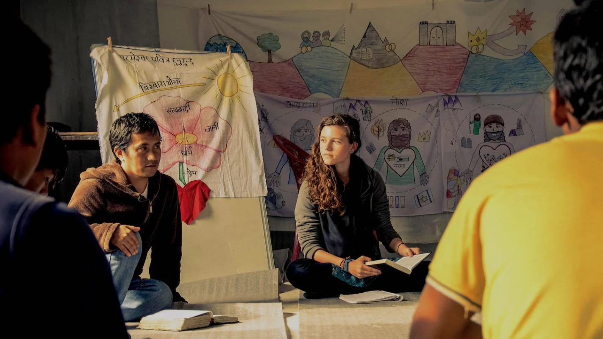
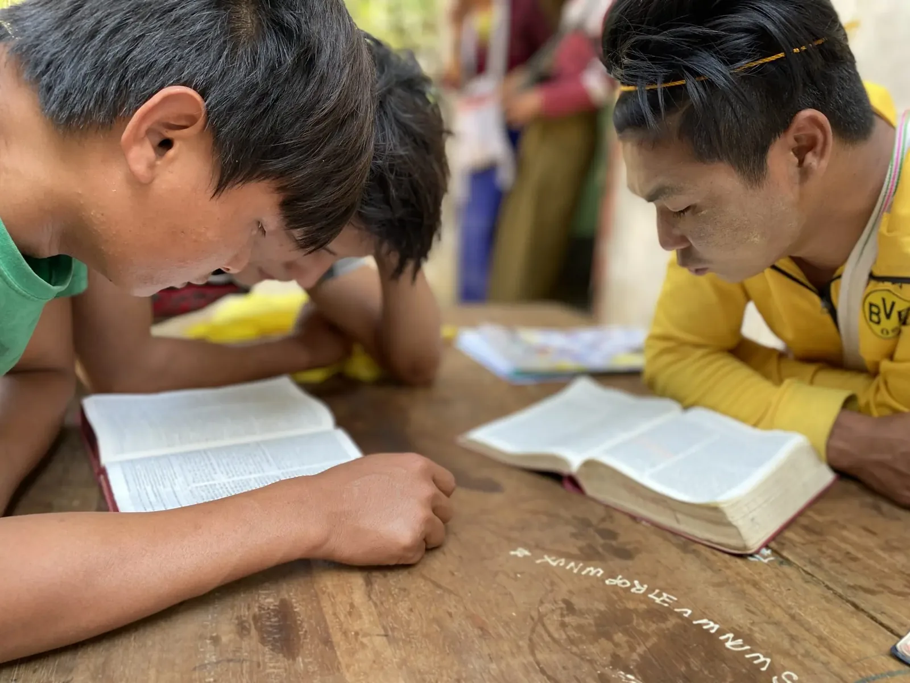

Taster
Two to three days, one topic from each level plus BELT's history and values. Choose a theme: Relationships, Leadership, Missions or Restoration.
BELT, a training ministry at YWAM Chiang Mai
Wycliffe translates the Bible into a language. BELT comes behind and teaches people how to open it. Since 1995, in over 60 countries and 70 languages.

The challenge
In many parts of the world the church is expanding quickly while carrying beliefs and habits it has never had the chance to examine against Scripture, because Scriptural understanding and application simply have not reached there yet.
What follows is predictable and painful: broken families, churches divided over things they have no shared framework to resolve, and communities marked by corruption. Not for want of faith, but for want of teaching. The leaders who would fix it are usually the ones with the least access to any Biblical training at all.
Our vision
BELT exists to see communities and people groups transformed by the Word of God, through empowering the church and community leaders who have limited access to Biblical training. We partner with mission organisations, Wycliffe Bible Translators first among them, and with indigenous churches, to develop leaders through culturally relevant Bible training.
The emphasis falls on applying Scripture to every area of life, and on equipping people to teach and influence others. A leader who has been taught well does not stay one student. That multiplication is the entire strategy, and it is why the numbers below are what they are.
The Transformation Series
The Transformation Series is BELT's signature curriculum, usually run over two weeks per level and accredited through YWAM's University of the Nations. It teaches through Bible storytelling and discovery learning, so participants uncover the answers in the text together rather than receiving them from the front, and every level has outreach and practical application built into it.
TS1
A leader's own relationship with God, and personal revival. Nothing further up this ladder holds if this level is skipped.
TS2
Discipleship topics and godly leadership. What the leader is like when nobody in the village is watching.
TS3
Impacting society through the spheres of influence. The point at which a trained leader starts changing things outside the church walls.
The rest of the toolkit
A seminar is only useful if the person in front of it can use what it assumes. Much of what BELT has built since 1995 exists because that assumption kept failing, in one direction or another.
Two to three days, one topic from each level plus BELT's history and values. Choose a theme: Relationships, Leadership, Missions or Restoration.
A two week workshop preparing someone to run seminars themselves, including delivery, application and methods for reaching oral learners.
Three days for BELT graduates, ending with the graduates joining BELT instructors to run a one day exposure camp of their own.
Eight weeks through the story of the Bible and how God transforms communities. One month in the classroom, one month on outreach.
Fully oral, chronological Bible storytelling for communities that do not read, taught the way they already pass on everything else.
Seventy key worldview stories from the chronological panorama of Scripture, on micro SD cards for mobile phones or on solar powered players.
Vessels equipping isolated Pacific island communities with Biblical training alongside practical development: bio-gas, aquaponics, agricultural technology, water filtration and disaster preparation.
Tools for local empowerment, so that teaching arrives with something practical attached rather than on its own.
A complete interactive curriculum plus colouring storybooks, so the next generation is not waiting until adulthood to be taught.
Where it started
Graduates of YWAM's School of the Bible and Teachers for the Nations travelled to Papua New Guinea to run the first Bible immersion seminar, following Wycliffe's four hundredth New Testament dedication. BELT grew out of that partnership and has since added other Bible translation agencies, development organisations, national churches and YWAM ministries.
The biggest change since then is who does the teaching. BELT deliberately shifted from multiplying international teaching teams to raising local ones. Local teams answer requests faster, fit the culture and language without translation, face fewer travel restrictions and costs, and leave a resource behind that stays after the seminar ends.

In their words
We give the Bible to the people, and you open it for them.
Dr. Wayne Dye, International Anthropology Consultant, Wycliffe Bible Translators
If you come to my house, you will find copies of the BELT posters all over the walls. Whenever someone comes to visit, I teach them the BELT lessons.
Pastor Alama, Democratic Republic of the Congo
Get involved
There is no online application form at present. Download the application form from BELT's own site, or contact the team and they will send you a PDF and walk you through the process.
Contact
Email BELT, or call +66 98 586 0670.
P.O. Box 113 CMU, Chiang Mai 50202, Thailand. The same postal box as the base, because BELT is based here.
Follow along
Get social
BELT runs its own site at ywambelt.org, including the full history of how it began and where it works now. The site is offered in more than twenty languages, which tells you most of what you need to know about who it is written for.